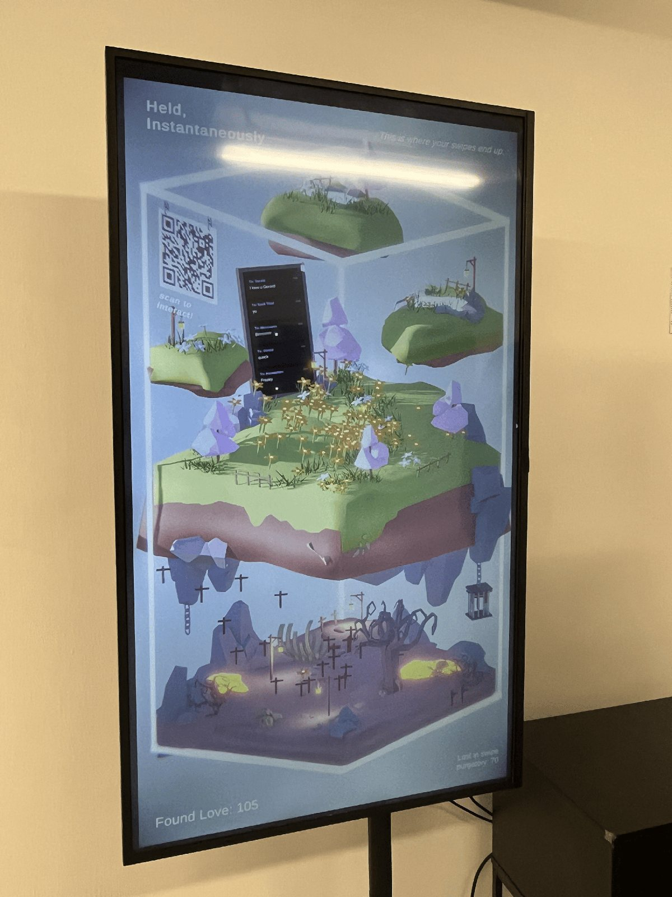

What if you could see your dating app swipes in real-time? Swipe left, swipe right, regardless of sides, your actions spawn NPCs that fall into world in front of you. This work was a response and reflection of what the digital dating age felt like. Like an NPC in a digital prison.